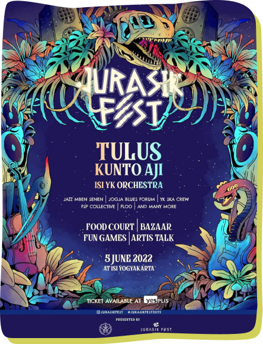

Jurasik Fest
5 Juni 2022
ISI Yogyakarta
Mahasiswa Jurusan Musik ISI Yogyakarta mempersembahkan, JURASIK FEST 2022! Finally, the dreams come true Persiapkan dirimu untuk merasakan keseruan festival musik bersama Tulus , Kunto Aji , ISI Yogyakarta Orchestra, FSP Collective, dan belasan penampil
lainnya! Gak cuma sampai di situ, bakal ada fun games, bazar dan food festival yang bakal nemenin kamu selama festival berlangsung. Tiket bisa kamu dapatkan di @yesplisofficial for more information, stay tune at @jurasikfest
Event Lainnya
expand_more
-
0:00
0:00